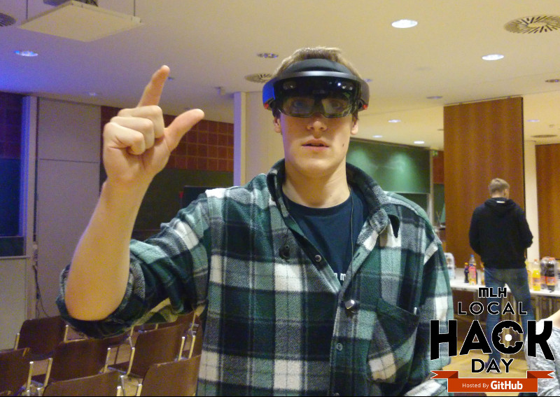

I started studying Computer Science in 2011 and I'm
planning to graduate with my master's degree in the
summer of 2019.
Ever since I completed the required courses for
the bachelor, I started to orient mostly in the
direction of machine learning und artificial
intelligence. I'm a very logic driven person, so I
like the idea of algorithms being able to perform
smart actions, even thought they're based on simple
logic. I'm also looking to complete the
KIKR-Profile (Künstliche Intelligenz, Kognition und Robotik)
within my master's degree.
For the past 4 months, I've been working on my
bachelor's project called Arico Approximate Computing,
a university project, where I build arithmetic
hardware with the capability to approximate the
result, in a trade off for shorter calculation time.
Now that I have spent a lot of time with building
the actual hardware, I want to research how/if it
can be used in machine learning. I will do this as
my bachelor's thesis.
Basketball
Basketball is by far my most passionate hobby. I
love that Basketball is such a high pace, action
packed game. It makes it fun to watch, as well as
always leaving a window open for a comeback.
For
me the high pace brings up a completely different
aspect to the game – when playing you have to make
fast decisions, where you don't have time to
overthink. I find this really refreshing, since
I'm usually the kind of person who always thinks about
everything a little to much.
I play Basketball for the DTV Devils in
Delmenhorst. We managed to become third in the
Oberliga-West this year. If you want to know more,
check out the team's website.
Bodyweight Training
Why do I think being an athlete and a Computer
Scientist is a perfect combination, you might ask.
Well, going to your limits and beyond will clear
your head completely, which is most useful when
you're stuck with a problem of any kind. If you
don't believe me just try it yourself the next time
you're stuck finding an error in your code and can't
seem to wrap your head around it.
Do an exhausting 30 min workout. You can find
plenty you can do anywhere anytime on the internet
(you can ask me, too). Afterwards you get a fresh
start at tackling the problem at hand.
Obviously I
can't guarantee your success afterwards, but I'm
sure you have a better chance of solving the problem
this way, worst case you get more fit.
I know what you're thinking – "I can't just do a
workout in the office" – and I guess you are
right, just do something when you get home then.
Your head will just be more clear in general and it
brings great balance to the office/university life.
I don't want to tell you how to live your life, but
I can't imagine my life without sports. I'm just
saying pushing your limits and having exhausted your
whole body completely is a great feeling for me, but
you should check it out for yourself. Since bodyweight
workouts don't require a membership you don't have
any excuses anyway.
Local Hack Day – University Bremen

The Local Hack Day is a international MLH event,
where all over the world small local 12h Hackdays
took place at the same time, one of which I
organized with three fellow students.
At hackdays
like these you meet new people, learn new stuff
and simply use the great work atmosphere to work
on your own projects.
Last year one of our sponsors
(UBiMAX) brought
two Microsoft Hololenses to the event.
If I sparked your interest, I'm sorry – the event
took place in December 2016. I know it's still a
long way to go, but we are definitely looking
to organize another one at the end of 2017.
 In my childhood I was a quite successful chess player.
I qualified for the German nationals multiple times
over my career.
In my childhood I was a quite successful chess player.
I qualified for the German nationals multiple times
over my career.
 I started playing Basketball at the age of 16 and never stopped since.
I truly love the mix of hustle, individual skills and team performance.
Basically I love everything about this sport.
I started playing Basketball at the age of 16 and never stopped since.
I truly love the mix of hustle, individual skills and team performance.
Basically I love everything about this sport.